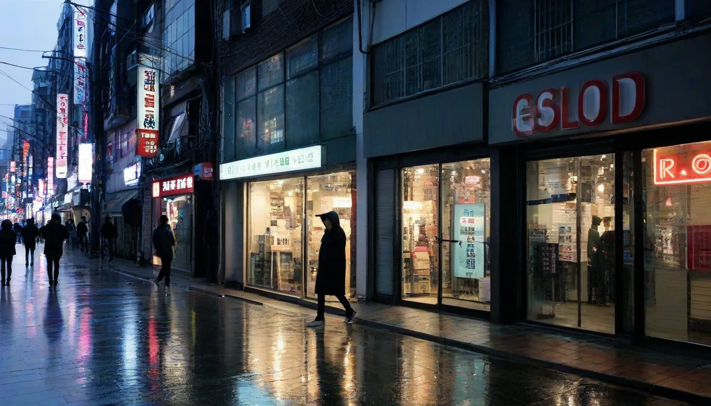

아이쿠, 우리 사장님들, 안녕하셨습니까요! 🙇♂️ 제가 또 이렇게, 뜬금없이 나타나서 송구스럽기 그지없습니다만, 요즘 홍대에서 벌어진 가슴 아픈 이야기들을 제가 좀 주워들어서 말입니다. 특히, 권리금 2억 원을 떡하니 주고 들어갔다가, 채 1년도 못 채우고 접으신 서교동 368-12번지 '더 시크릿 라운지 (2023년 3월 오픈, 11월 폐업)' 사장님 이야기를 듣고 제 마음이 다 찢어지는 줄 알았습니다요. 😭

아니 글쎄, 그 이전 '재즈 앤 와인바 루나 (2020-2022)' 사장님은 권리금 2억 원을 아주 시원하게 챙겨 나가셨다는데, 그 실거래 내역서를 제가 우연히 스캔해볼 기회가 있었습니다. 세상에, 계약서에 명시된 '키오스크 시스템 유지보수 비용 분담' 조항이랑 '2023년도 최저임금 상승률 연동 임대료 인상 상한선 합의' 부분이 아주 기가 막히게 작성되어 있더라고요. 물론, 새로 들어오신 사장님께는 독소 조항이나 다름없었겠지요. 😢 2023년 홍대 상권은 정말이지, 과거의 영광만 믿고 뛰어들면 큰코다치는 곳이 되어버렸습니다. 단순히 '위치빨'만으로는 어림도 없었거든요.
폐업의 그림자: 왜 2억 권리금마저 소용없었나? 💸
'더 시크릿 라운지'의 경우를 보면, 그곳은 이전부터 '조용한 데이트' 컨셉이었는데, 2023년 홍대 주 소비층은 이미 '시끄럽고 화려한 인스타그래머블 스팟'이나, 아예 '초개인화된 테마형 바'로 양극화되어 버렸습니다. 어정쩡한 포지셔닝은 그야말로 독이 된 것이죠. 특히, 이전에 사용하던 'PoS 시스템 버전 7.1'과 연동된 구형 키오스크가 잦은 오류 '주문 누락 0x0A'를 일으켜서, 손님들의 불만이 폭증했다고 하네요. 😱